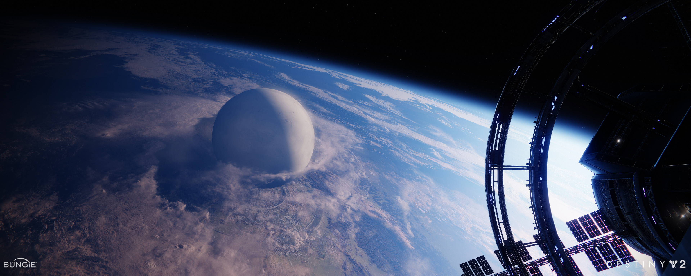

The Awoken People
The Awoken are a race of humans that you meet back in Destiny 1. You never really learn much about their people until Destiny 2. There was lore, but even the lore was vague. There was a dlc in D2 called, "Forsaken"; and in this dlc you got to explore their realm. You get to see their city, their people, their queen and so much more. You take a deep dive into the loads of lore or story that come with this dlc. You have to take breaths, because of how much there is. The backstory for these people never made sense in Destiny 1 and they generally came off as hostile or anxious. They would be your royals of modern day today.
Who are the Awoken?
For starters, remember the Traveler. The Traveler is a being of pure light. The way it fights is using light energy against the Darkness. At some point in the beginning of the Collapse, the Traveler sends off a wave of light to fight a wave of darkness. These two waves crash against eachother on a colony ship containing humans. Due to them colliding, it kills everyone on the colony ship; brings them back as beings of light and dark. The awoken people are beings of the mixture of light and dark. They deemed themselves as Awoken due to the fact, that they see both light and dark.
Why did I choose this as my Topic?
I chose Destiny as my topic, because I love history, amazing sceneries, and sci-fi. Destiny has all three and that's why I love it so much. It has such beautiful sceneries. For example, you can sit in the tower and watch it go from day to night, you can stare at these beautiful mountain ranges. You can see the planets in your destinations UI rotate on their axis. You can experience blizzards on snow planets, and hear tiny little crickets oj planets fukl of grass. The details in everything, is what makes me love this game more and more. Even if you don't think you'll ever play, I encourage you to check out its lore if you love sci-fi related stories.
